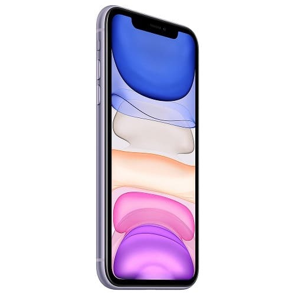
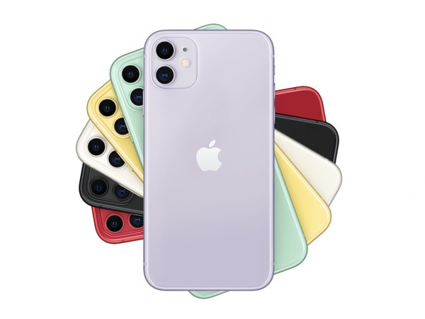
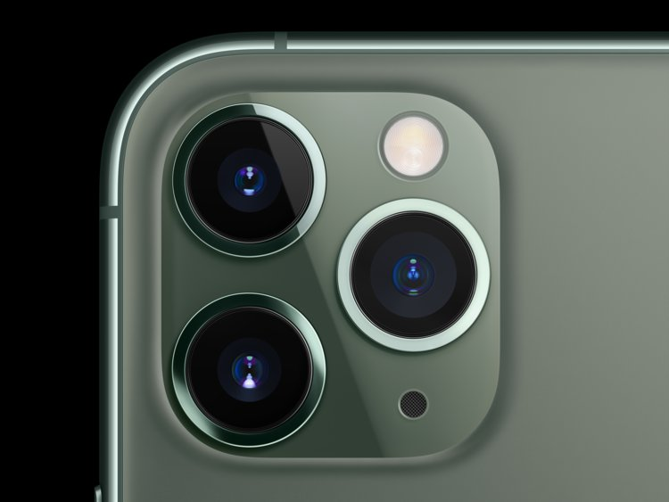
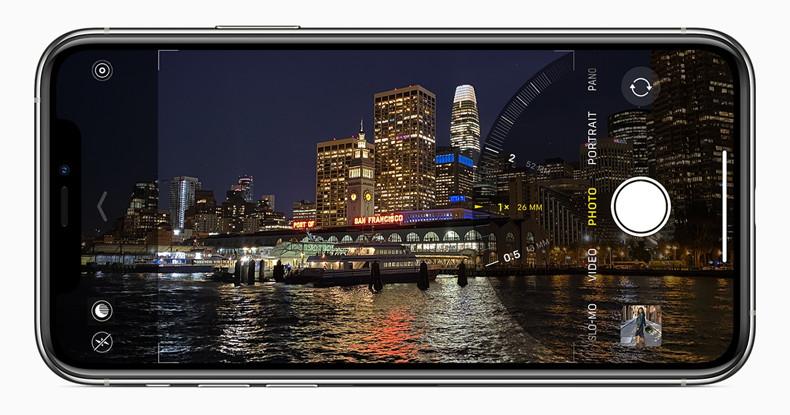

Apple a prezentat modelele iPhone din gama pentru anul 2019, care va fi alcătuită din 3 modele. Spre deosebire de anul trecut, producătorul american a optat inclusiv pentru o simplificare a numelor utilizate, pentru ca poziționarea în gamă să fie mai ușor de înțeles.
Modelul de bază este iPhone 11, care joacă rolul succesorului lui iPhone XR, fără însă ca acest lucru să însemne că acesta este și cel mai mic dintre ele. Cu dotări mai puțin impresionante, acest model este poziționat în gamă sub modelele premium iPhone 11 Pro și iPhone 11 Pro Max, care sunt practic similare ca specificații, cu o diferență majoră în privința diaogonalei ecranului.
Așa cum probabil intuiești, iPhone 11 Pro înlocuiește în gamă iPhone XS, în timp ce iPhone 11 Pro Max este succesorul direct al lui iPhone XS Max.
Fiecare dintre cele trei modele se adresează unei anumite categorii de utilizatori, iar noile terminale au rolul de a acoperi o gamă cât mai variată de utilizatori din perspectiva prețului.
Chiar dacă în mod tradițional Apple introduce schimbări relativ majore o dată la doi ani, iar acum a schimbat inclusiv numele modelelor, cele trei iPhone 11 păstrează în mare parte designul predecesorilor. iPhone 11 este modelul de bază și, chiar dacă este realizat din sticlă și aluminiu, finisajul nu este de o calitate la fel de înaltă ca în cazul celor două modele de top, iar același lucru se poate spune și despre dotările tehnice.
Partea frontală a rămas cea pe care o știm de la XR, cu un notch relativ dreptunghiular în partea superioară și un ecran LCD cu diagonala de 6.1 inch care oferă o rezoluție de 1.792×828 pixeli. Platforma hardware este însă similară cu cea a modelelor de top, întrucât Apple a optat pentru noul chipset proprietar A13 Bionic. Așa cum ne-am obișnuit, Apple nu a detaliat specificațiile tehnice ale chipset-ului, însă anterior s-a vehiculat că acesta va avea 4 GB RAM, cu 1 GB RAM în plus comparativ cu XR. De asemenea, versiunea de bază a modelului va avea 64 GB memorie internă.
Pentru camera foto, Apple mizează pe doi senzori montați în colțul din stânga-sus al părții din spate, iar aceștia sunt încadrați într-o formă de pătrat cu colțuri rotunjite în care Apple a integrat și LED-ul flash. Ambii senzori au 12 MP, iar unul dintre ei este wide și are f/1.8, în timp ce al doilea este ultra-wide, are f/2.4 și poate realiza imagini cu zoom out de 2X. În plus, Apple introduce Night Mode, un mod asemănător cu cele disponibile pe numeroase terminale Android pentru a realiza imagini de o calitate mai bună pe timp de noapte.
Nu în ultimul rând, Apple a îmbunătățit și camera frontală, care acum oferă 12 MP și posibilitatea de a realiza clipuri video slow-motion, pe care Apple le numește slofies. În privința acumulatorului, Apple s-a limitat să anunțe o autonomie cu o oră mai mare decât cea a lui XR, însă o serie de informații anterioare sugerează prezența unei baterii de 3.110 mAh.
Între timp, modelele de top iPhone 11 Pro și iPhone 11 Pro Max sunt similare din punct de vedere al designului și al dotărilor tehnice. Producătorul a decis să schimbe inclusiv numele ecranului în Super Retina XDR, însă în esență vorbim despre panouri OLED care oferă o luminozitate de 1.200 cd/m2 și un consum mai scăzut de energie. Ecranul lui iPhone 11 Pro are 5.8 inch și o rezoluție de 2.436×1.125 pixeli, în timp ce iPhone 11 Pro Max mizează pe un display de 6.5 inch cu rezoluție 2.688×1.242 pixeli.
Platforma hardware este similară cu cea a lui iPhone 11 prin utilizarea chipsetului A13 Bionic, însă cantitatea de memorie RAM este de 6 GB.
Camera foto este un alt compartiment în care cele două modele Pro ies în evidență. Pe lângă cei doi senzori deja menționați, 11 Pro și 11 Pro Max mizează pe un senzor suplimentar tele cu f/2.0 care oferă zoom în 2X. De asemenea, Apple susține că în această toamnă va lansa un update pentru cameră pentru realizarea unor imagini așa-numite imagini DeepFusion: o imagine va fi în realitate o combinație între 9 imagini distincte realizate în rafală, dintre care una cu o mare expunere. Cu alte cuvinte, Apple se aliniază acum la tendința remarcată deja pe piața smartphone-urilor cu Android în privința camerelor triple.
Pe piața din Europa, gama iPhone 11 va fi disponibilă începând din 20 septembrie, iar precomenzile vor începe în 13 septembrie. De asemenea, într-o mișcare mai puțin obișnuită, Apple a anunțat că iPhone 11 va avea un preț cu 50 de euro mai mic decât XR, în timp ce iPhone 11 Pro și iPhone 11 Pro Max vor costa la fel de mult ca predecesorii lor.
După apariția pe piața din România, vei găsi aici lista completă cu versiuni în funcție de capacitatea de stocare și de culorile disponibile.
iPhone 11, iPhone 11 Pro și iPhone 11 Pro Max sunt modele bazate pe designul introdus de iPhone X în urmă cu doi ani, iar principalele noutăți sunt la camera foto. De altfel, inclusiv Apple a insistat cel mai mult pe prezentarea funcțiilor pentru camera foto. Utilizatorii actuali de XS și XS Max ar putea găsi însă prea puține motive să facă un upgrade.
În schimb, cei care utilizează modele mai vechi de iPhone ar putea fi tentați să achiziționeze unul dintre cele 3 modele, în special în funcție de buget, mai ales dacă își doresc o cameră foto cât mai complexă.